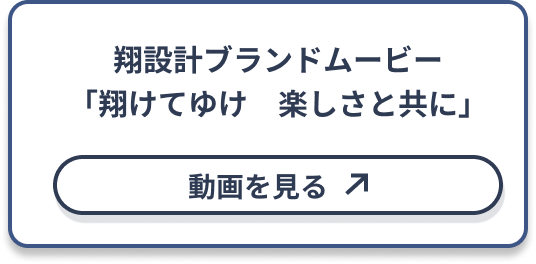
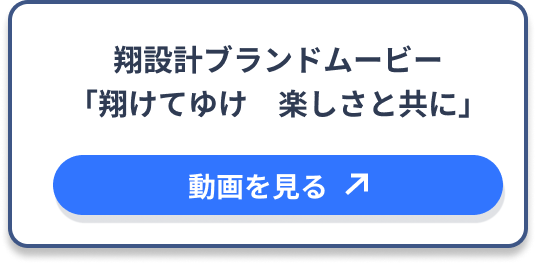
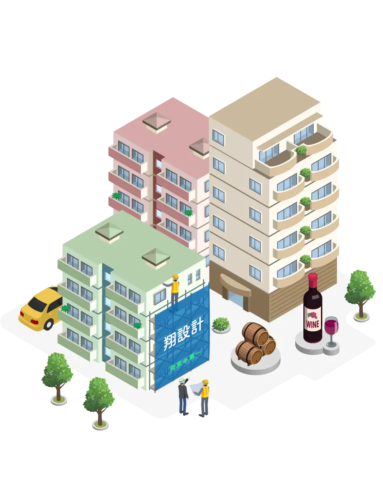
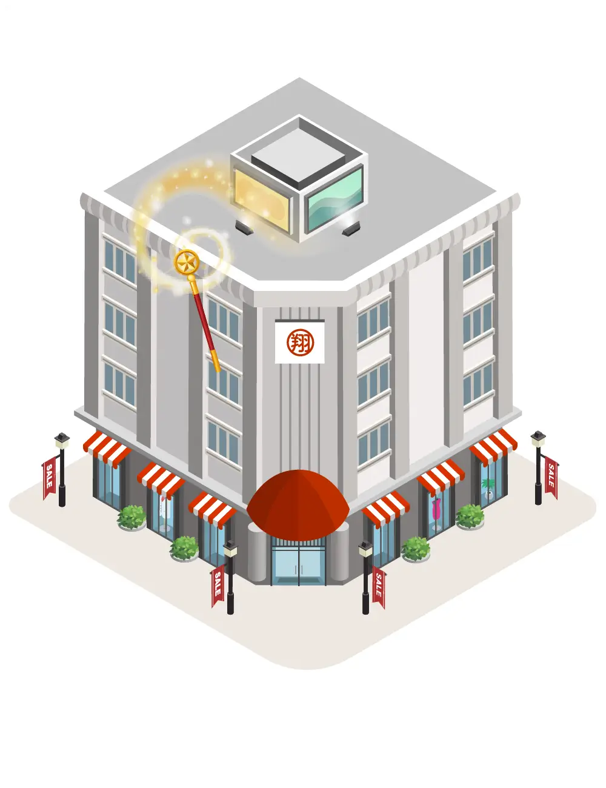
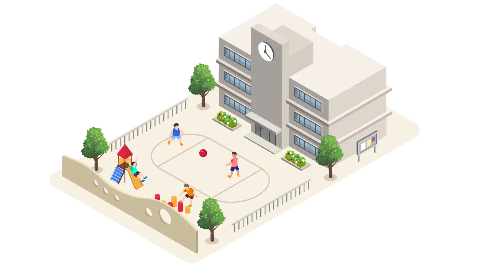
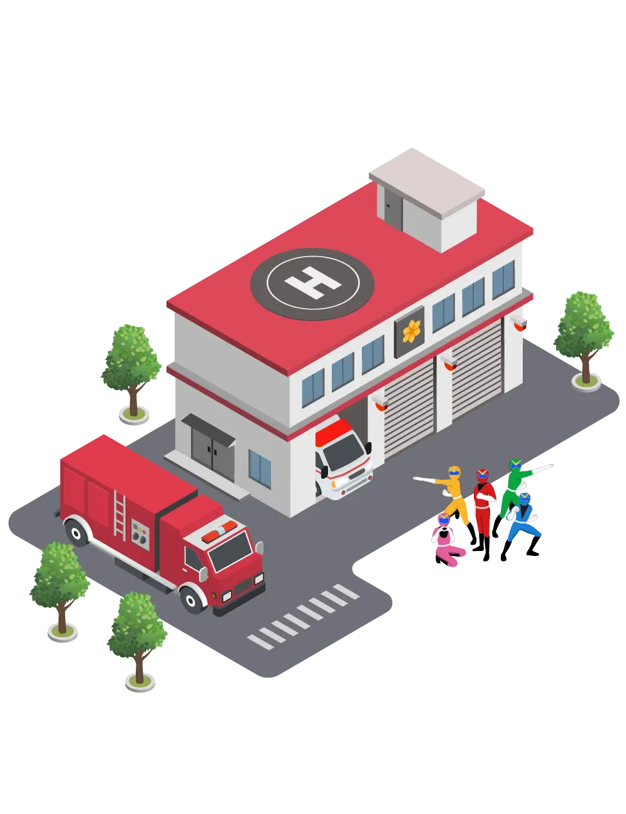
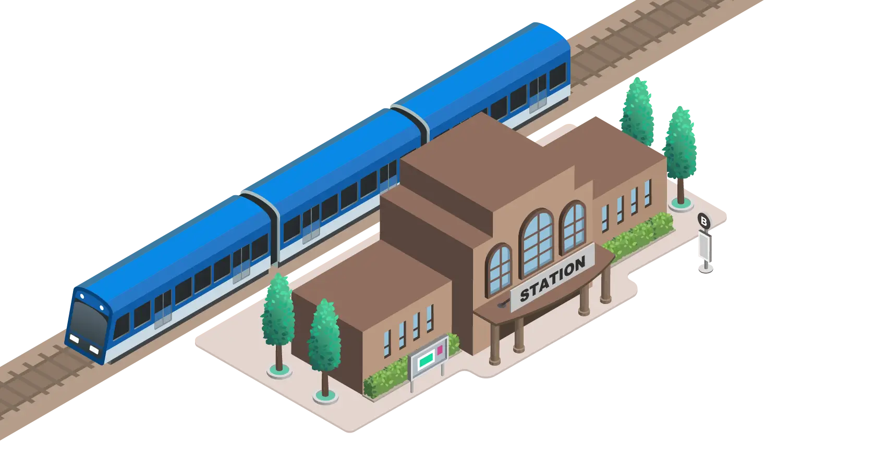
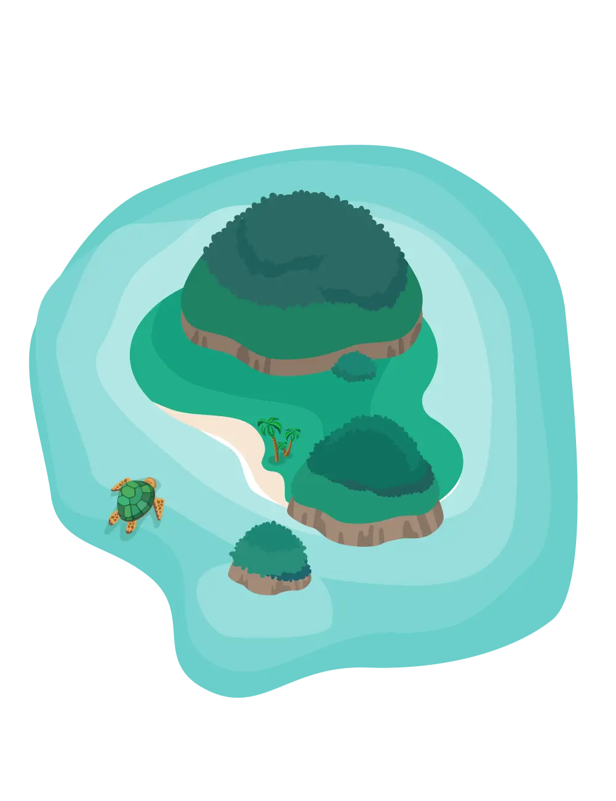

© 2024 翔設計グループ All rights reserved.
 
マンションにも「熟年」の味わい。
地球にも人にもオアシスが必要。
ほっぺたとお財布の紐を緩める魔法。
「ポチッと」を支える。
海の上にも翔設計。
熱狂を設計する。
未来が詰まった宝箱。
ヒーローに、ホッとできる基地を。
頼られるだけじゃなく、愛される交番に。
誰も乗り遅れないように。
動物たちも思わず唸る、ふるさとづくり。
心と薪に火をつける。
たまにはホテルもリフレッシュ。
支える人にも支えは必要。
なくてはならない名脇役。
海の向こうにも翔設計。
翔設計は持続可能な社会の実現を目指し、ウミガメの研究とSTELを応援しています。
顧客の心を鷲掴みにする、ソフト×ハードの最強タッグ。
たかが40年、されど40年。振り返れば、いろんなことがありました。
翔設計の“癖”になるセミナー。
これ以上、地球に重たい荷物は背負わせない。
本社ビルの中に入る
SHO CITY建物一覧
翔設計コーポレートサイトへ
翔設計サービスサイトへ
Close menu
01
マンション
Condominium

マンションにも「熟年」の味わい。
マンションに迫る老い。しかし建替えは難しいのが現実です。そんな中、私たち翔設計が目指しているのは、次世代にもしっかりと住み継いでいける、マンションの長寿命化。人と同じように、マンションにも「熟年」の味わいがあります。専門家が手をかけ「適切な方法」で「適切な管理」を行うことで味わいと価値を高めるヴィンテージワインのように、翔設計では高経年マンションの長寿命化と資産価値向上のための最適解を専門家としてご提案します。新築のマンションにはない熟年の味わいを感じられるヴィンテージマンションへの熟成をお手伝いします。
Close menu
02
オフィスビル
Office buildings
地球にも人にもオアシスが必要。
温暖化が地球規模の問題となっている現代、オフィスビルの環境性能向上は、今や必須条件と言えます。その一方で、少子高齢化と人手不足がさらに進み、生産性向上と持続可能な労働環境の整備が企業の課題となります。翔設計はオフィスビルの内外装・設備等のリニューアルをはじめ、時代が求める新たな価値をプラスし、各種環境性能評価取得はもちろん、フェーズフリー防災までを網羅した計画をプロデュースします。
Close menu
03
店舗・商業施設
Stores/shopping complex

ほっぺたとお財布の紐を緩める魔法。
ブランドの世界観を具現化する空間づくりから、フレキシビリティを考えた設計、集客力を高める照明デザイン、維持管理コストのサポートまで、店舗や商業施設の建築をトータルにマネジメント。目に見える表面の部分だけでなく、その背後にある意味や本質に迫るアプローチで、建物の価値向上と集客率UPによる収益性向上を実現します。
Close menu
04
工場倉庫
Factory
「ポチッと」を支える。
クリック1つで何でも届く時代。それを支える工場や物流倉庫は劇的な進化をしています。まずは安全第一、当然品質もコストも納期も大事。いわゆるSQCD（Safety/Quality/Cost/Delivery）への配慮は、工場や倉庫の計画に欠かせない要素です。翔設計は、さらにその先の物流を含めた、働く人たちがワクワクを感じながら働ける快適な環境を目指します。
Close menu
05
港湾施設
Port facility
海の上にも翔設計。
海上交通の要となる「海上交通センター」や、航路を照らす「灯台」など、陸だけでなく、海の上の施設も幅広く手掛ける翔設計。災害発生時にも安全に機能することを考慮した防災対策の徹底、地球の未来を意識した周辺の海洋環境への配慮など、これまでに培ってきた知見をフルに活用しながら、これからも海洋国家日本を支える船舶の安全を見守り続けます。
Close menu
06
スポーツ施設
Sports facility
熱狂を設計する。
人々の歓声が響き渡るスタジアム。近年、その進化は著しく、ユニバーサルデザインや安全な動線計画、臨場感あふれる客席空間など、熱狂や一体感を後押しする工夫がいたるところに散りばめられています。翔設計は興奮と感動をデザインします。
Close menu
07
教育・保育施設
Educational/
nursery facilities

未来が詰まった宝箱。
未来を担うこどもたちの安全を守り、その無限の可能性を広げるための環境を創ります。特に、保育園、児童館、小学校といった教育施設に力を入れ、災害に強い学校づくりや、多様な教育的ニーズへの対応、地域に開かれた空間設計を実現してきました。こどもたちの自由な発想・探求学習を支え、どこまでも自由に想像の翼を広げられる安心で安全な学びの場の提供、さらには木育・食育・心育をサポート。翔設計は、未来を担う彼らの安全を守り、その無限の可能性を広げるために、今日も全力でたくさんの未来と向き合っています。
Close menu
08
消防署
Fire station

ヒーローに、ホッとできる基地を。
消防隊、救助隊、救命隊――まちを守るヒーローたちの基地、それが消防署です。耐震等級3という最高レベルの耐震性、業務がスムーズに行える動線設計など、堅牢なイメージが強いかもしれませんが、待機時のヒーローたちがリラックスして過ごせる空間づくりや、ヒーローたちが普段から街で愛されるための街並みと調和したデザインなど、ソフト面の工夫もたくさん施されています。
Close menu
09
交番
Police box
頼られるだけじゃなく、愛される交番に。
「SUMO」や「NINJA」と並び、今や国際語となった「KOBAN」。市民との日常的な触れ合いを通じて、まちの安全を守る、この日本生まれの優れたシステムを、私たちは建築の力で後押しします。明るく親しみやすく、誰もが安心して立ち寄れる場所にするためのさまざまな工夫が施されている交番建築。ここから得られる知見や手法は、翔設計が手掛ける他の事業領域でも大変役立っています。
Close menu
10
駅
Station

誰も乗り遅れないように。
駅は人々の人生が交わる場所。再会、別れ、そして新たな旅立ち。輝きを得るために向かい、経験をお土産に帰る。そのどれもがかけがえのない瞬間だから、できればつまずいたり転んだりしないように。未来への列車に誰も乗り遅れないように。そんなことを考えながら翔設計はみんなに優しい駅を創ります。
Close menu
11
動物園
Zoo
動物たちも思わず唸る、ふるさとづくり。
動物が本来の生息環境と同じようにくつろげる場所、そして飼育員も来園者も笑顔でいられる空間をつくる。それが、私たち翔設計の仕事です。業界内で数少ない動物園コンサルタントとして、何よりも動物のことを最優先にしたアニマルウェルフェアをもとに「本来の生育環境の再現」「来園者の安全」「飼育管理の効率化」など、時には相反する要件もうまくまとめ上げながら、世界基準となる動物園づくりに取り組んでいます。
Close menu
12
キャンプ場
Campsite
心と薪に火をつける。
非日常が得られるアウトドアアクティビティ。自然と向き合い心と体で体験する特別な時間、ゆらぐ火を見て過ごす贅沢な時間。非日常と体験を演出し、みんなが思わず行きたくなってしまう魅力的な空間・体験をプロデュースします。
Close menu
13
ホテル
Hotel
たまにはホテルもリフレッシュ。
ホテルは心と体をリフレッシュさせ、次への活力を生み出す場所。そんな特別な体験を提供してくれるホテルをリフレッシュさせましょう。ホテルの外内装から構造・レストラン・ラウンジ・オペレーション・ブランディングまでトータルで対応。より価値のあるホテルへ生まれ変わらせます。
Close menu
14
医療・福祉施設
Medical/welfare facilities
支える人にも支えは必要。
「すべての人に、健康と福祉を」。SDGsの3番目に掲げられたこの目標は、建築総合コンサルタント企業である翔設計にとっても重要な指針の一つです。「こどもも高齢者も健常者も障がい者も、皆が垣根なく共生できる開かれた福祉の実現」「過酷な環境で働くことを余儀なくされている医療・福祉従事者が、安全に心地よく働ける環境づくり」。その一つひとつは小さなステップかもしれませんが、少しでもより良い未来に貢献したいという思いで、これからも医療・福祉の課題と向き合い続けます。
Close menu
15
公園
Park
なくてはならない名脇役。
都市と建物をつなぐランドスケープ。普段あまりスポットライトはあたりませんが、実は街の景色を創る上でなくてはならない名脇役。存在感は隠せません。公園や広場は憩いの場であり、こどもたちの楽しい遊び場。さらに地域の防災拠点としても重要な役割を担っています。
Close menu
16
本社ビル
Head office
事業領域
顧客の心を鷲掴みにする、
ソフト×ハードの最強タッグ。
翔設計は名前の通り設計事務所ですが、実は設計だけでなく、プロジェクトマネジメントが得意な建築総合コンサルタント企業です。
建築プロジェクトを成功させるには、ソフト（PM、CM、不動産、税務、収益）とハード（デザイン、設備、構造、施工）両方の力が不可欠です。翔設計では、この2つを組み合わせることでプロジェクト全体を最適化。クライアントの要望を最優先に、リスク管理は鋭く、コストはスマートに、そして設計・施工の質はより高みを目指して。まさに柔と剛を兼ね揃えた最強タッグで、皆様の想いをカタチにしていきます。
Close menu
16
本社ビル
Head office
翔設計の歩み
たかが40年、されど40年。
振り返れば、いろんなことがありました。
・創業期
1985年に構造設計事務所としてひっそりスタート。歴史的建造物の保存・再生に情熱を注ぎ、改修技術を磨きながら、官公庁のプロジェクトなどにも積極的に挑戦。気づけば、意匠・構造・設備、建築全般を手掛ける総合設計事務所へと成長していました。
・成長期
社会やクライアントが抱える課題に向き合う中で、設計だけにおさまらない建築総合コンサルタント企業へのシフトを決意。ハードとソフトの両面からクライアントの課題解決をサポートする新しいアプローチを取り入れることで、「最良の選択」を提供できる建築総合コンサルタント企業へと変革してきました。
・拡大期
建築・構造・設備・改修、そしてそれらを束ねるプロジェクトマネジメント部門を設置。さらに、グループ内で工事・不動産部門まで網羅する体制へと発展。建物の「誕生」から「老い」、そして「再生」まで、すべてのステージを一気通貫で支える企業としてアップデートを続けています。建物に新たな命を吹き込み、その歴史を未来へと繋ぐ――それが私たち翔設計の使命です。
Close menu
16
本社ビル
Head office
セミナー
翔設計の“癖”になるセミナー。
翔設計では、定期的にセミナーを開催。 修繕、防災対応、そしてコミュニティの問題など、分譲・賃貸マンションオーナーが直面する様々な悩みを、経験豊富なプロたちが解決するお役立ちセミナーを開催しています。「ここだけの話」もたくさん聞けて、癖になる人が続出…実は翔設計ファンクラブもあるとか。セミナーでは参加者同士の交流会も開催しており、同じ悩みを持つ方々の交流の場としても人気です。
▶セミナー情報は、翔設計のメールマガジンでCheck！
メールマガジン登録はこちらから
Close menu
16
本社ビル
Head office
翔設計のこれから
これ以上、地球に重たい荷物は背負わせない。
特に力を入れて取り組んでいるのが、建物の長寿命化と防災力の強化。できるだけ環境負荷を避け、建物の長寿命化と収益性向上を目指したリノベーション（再生）やコンバージョン（用途変更）、防災という付加価値で建物に新たな価値を与える。そうして持続可能な建物・街・社会を実現することが、これからの未来に向けて、私たちが果たすべき役割だと考えています。
翔設計が考える、新しいオフィスビルのカタチ
翔設計の本社オフィスも入居する「未来型次世代オフィスビル」（鈴福ビル：渋谷区千駄ヶ谷）をプロデュース。太陽光発電＆EVインフラを活用した電気の循環システムで非常時の電源が確保されているほか、敷地内に掘られた井戸は、災害時の生活用水としても利用でき、地域や社会に貢献できるつくりになっています。
Close menu
17
島しょ部
Island part

海の向こうにも翔設計。
翔設計は、「小笠原住宅新築プロジェクト」や「母島保育施設プロジェクト」「伊豆諸島新島 都教職員住宅」など、東京都の離島を中心に、海の向こうでも活躍の場を広げています。また、2023年にはカンボジアのプノンペンに初の海外支店をオープン。グローバルな視点からも革新を続ける企業として、新たな挑戦を続けています。